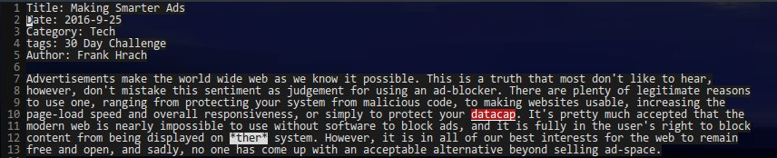

As it is for many, tmux is an irreplaceable part of my workflow, however, anyone who has a 256color color scheme in vim is familiar with this picture:

Thankfully, this is easily fixed with a simple modification to your vimrc.
I'm not exactly sure why the following snippet fixes this, but setting t_ut to blank fixes the issue. I am unsure
of how this effects vim's normal coloring, so, it never hurts to check for the specific case.
if &term =~ 256color
t_ut=
end if
It's that easy!